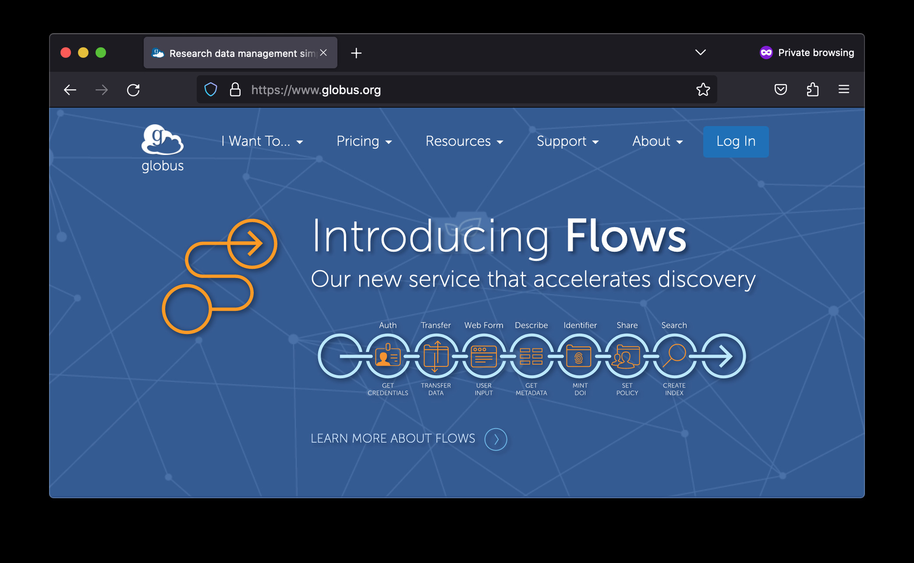
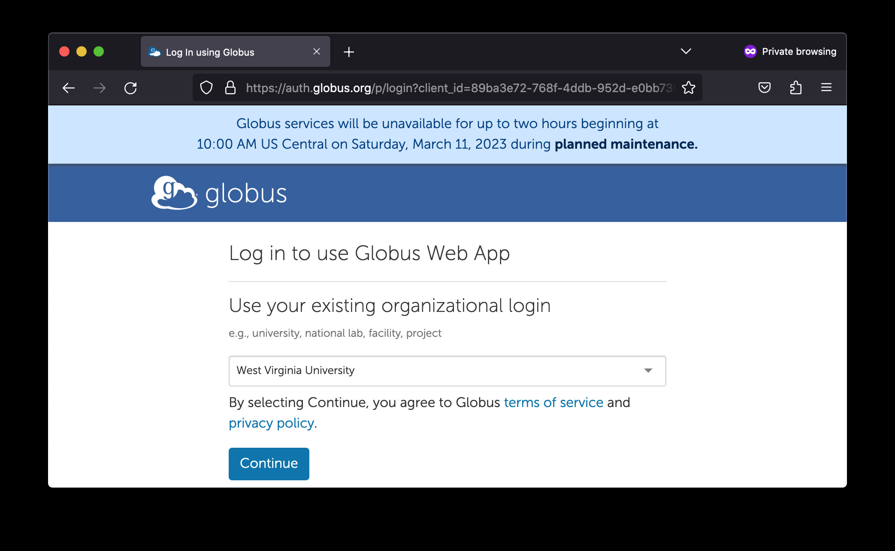
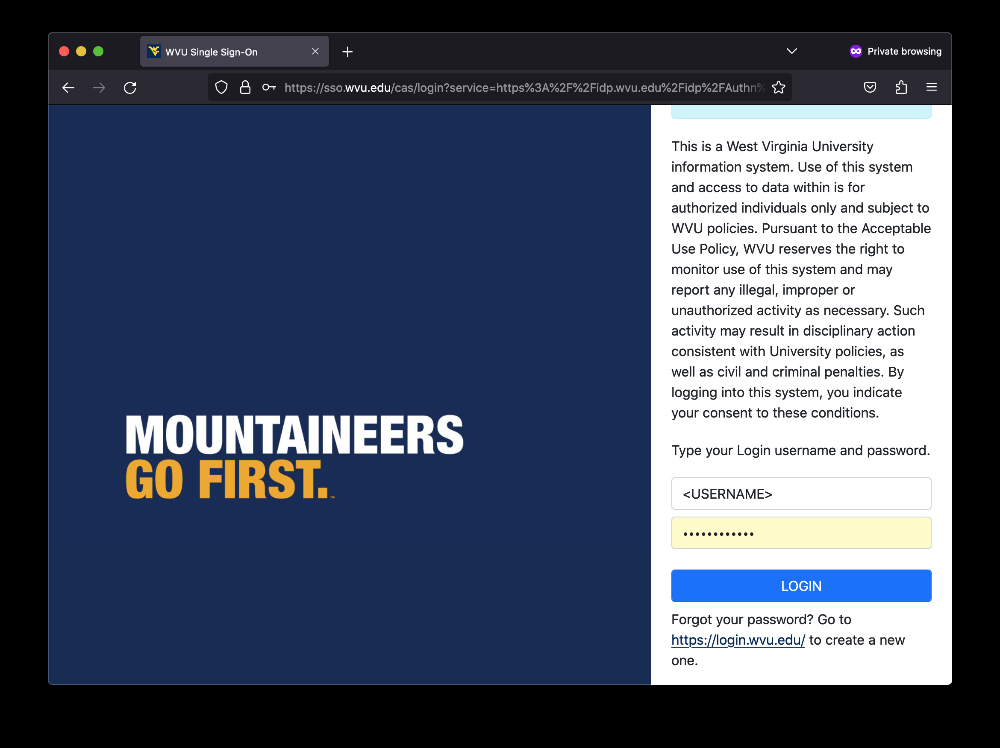
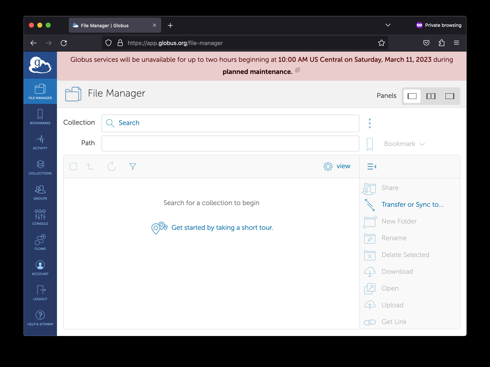
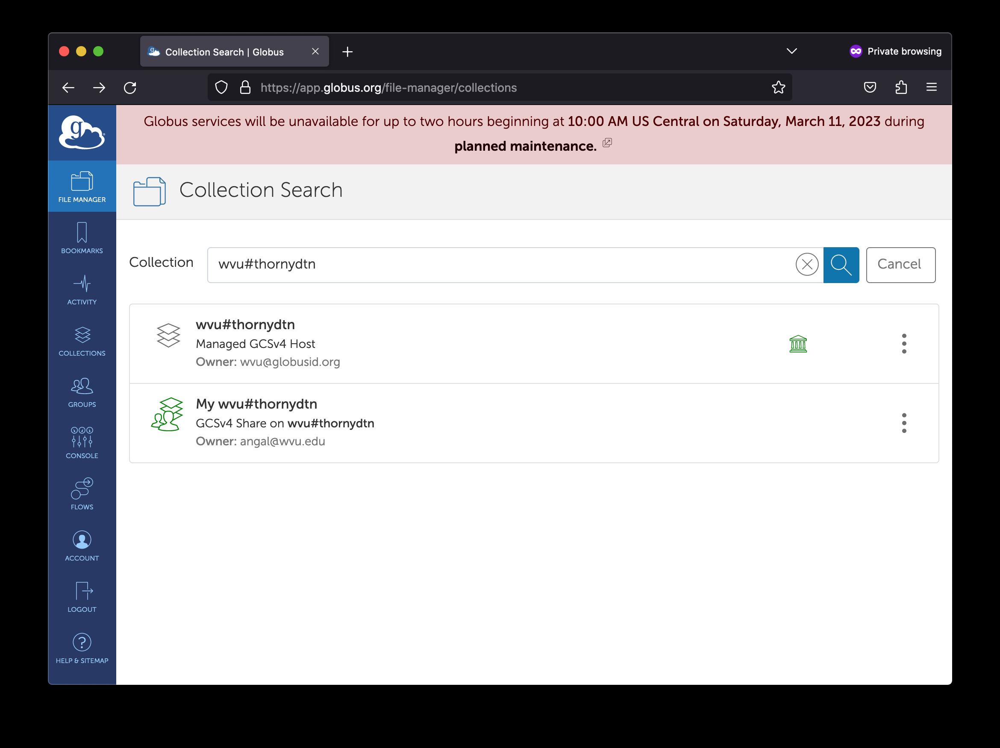
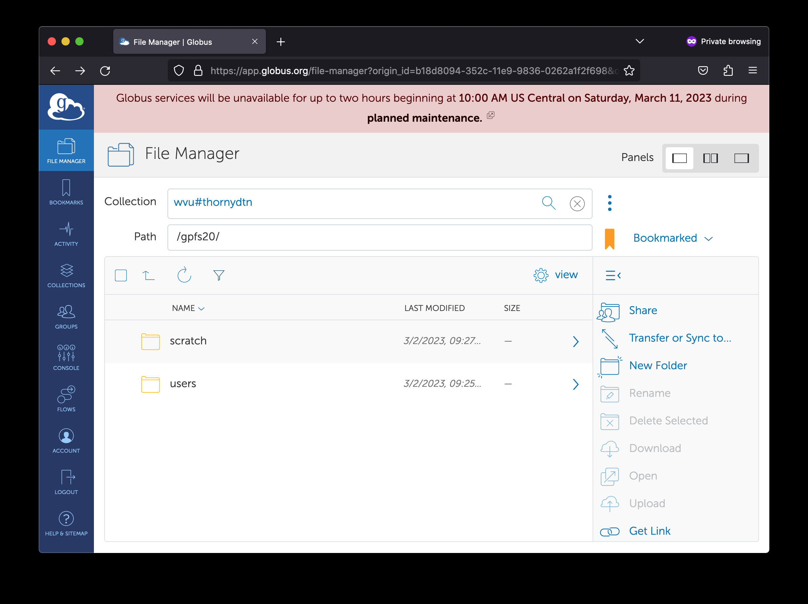
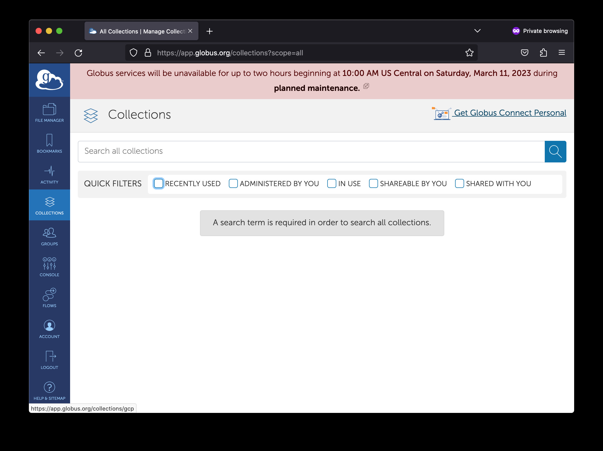
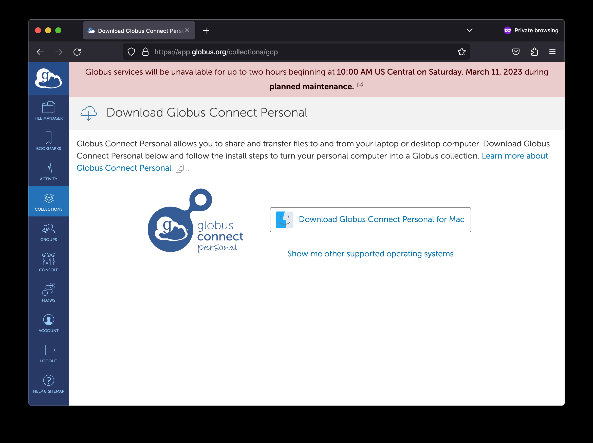
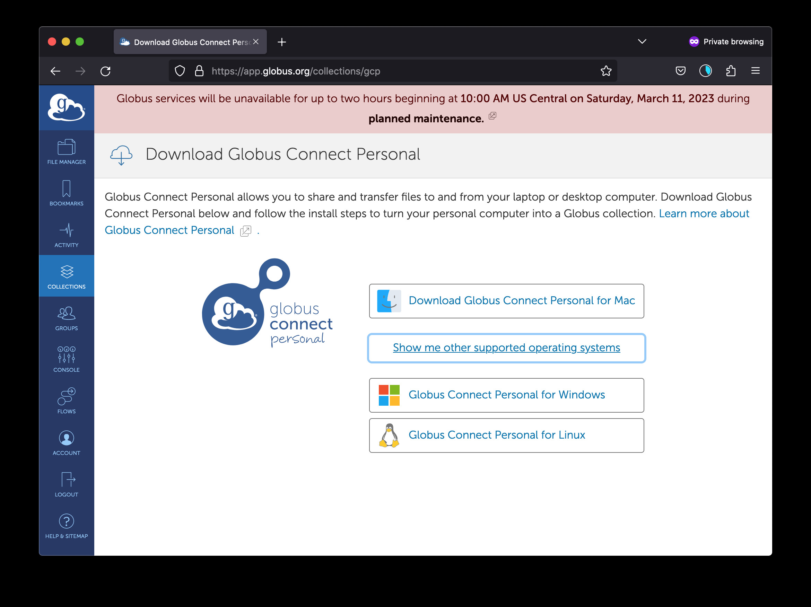

File Transfer (Globus)¶
Using Globus Online¶
Copying files and folders in and out an HPC cluster is a routine task for HPC users. Users need to move input data to the cluster before this data can be processed. The results will be moved out of the cluster in form of files and folders containing text, figures, tables or some other data. The amount of data could be as small as a simple text file with a few lines or as big as a large binary file or several folders summing Giga Bytes of data.
There are several ways of moving data in and out our HPC clusters. In this section we will focus on the simplest, most effective way of moving data from/to the clusters regardless of size or number of items to be transferred.
Globus Online is the preferred method for transferring files to, from, and between HPC clusters. There are several advantages for using Globus compared to other methods that will be covered on File Transfer Section: We can summarize the advantages as:
° Globus works from a web browser, not need to learn commands for a terminal.
° Transfers are done in the background so users do not need to keep the browser open. The tranfer happens behind curtains.
° Auto performance tuning to ensure the data is transferred as quickly as possible. One can expect a speedup of at least 2x over traditional transfer methods.
° Transfers can work in parallel, data could be encryted during transfer.
° The integrity of the tranfer can be ensured via checksum methods (Hashes).
° Transfers are automatically restarted after a failed or stopped connection.
° Ability to only transfer files that have yet to be transferred (similar to rsync).
In addition to all this advantages, WVU is also a Globus Subscriber which provides additional services over the basic/free subscription. WVU’s Globus Subscription adds the following features:
Ability to archive/transfer data with unlimited storage to user’s Google Drive MIX Account.
Sharing of data with others inside and outside the university.
Sharing of data from personal workstations via Globus Connect Personal.
Understanding Globus¶
Globus works by properly connecting data storage locations such as your data on one of our HPC clusters with some other data storage locations. Those storage locations are called “endpoints” Your own computer could be also an “endpoint”. To become an endpoint your computer needs to run an small application called “Globus Connect Personal”. This is the software that will run behind curtains and execute the transfer tasks between your computer and a remote endpoint such as the HPC cluster.
Once a storage defined as an endpoint, it will be available for authorized users to transfer files to or from this endpoint. You can install multiple personal endpoints on several of your computers and transfer from the HPC cluster to your desktop computer initiating the transfer from your laptop.
The following instructions will take step by step into the process of connecting your HPC account with Globus and installing the personal endpoint on your computer.
Connecting to the Globus Web App¶
To be able to move data in and out the HPC cluster to your own computer, there are two tasks to be completed. Link Globus to your personal WVU account so you can access the end points to our clusters and download and install “Globus Connect Personal” which is a small piece of software that will transfor your own computer into an endpoint where you can interchange data with the HPC cluster.
The steps are very simple all from your web browser and after a few minutes you will have setup the end points and will be able to tranfer files. The first step is to connect Globus Homepage by clicking on the link or by directly typing www.globus.org on your web browser.
Once the initial page of globus is displayed, clic on the top right corner over Log in
{kind=link}
You will be redirected to a page indicating to log in to use the Globus Web App. On the field Use your existing organizational login. Go to the text field and start typing “West Virginia University” until you can see the name and select it. Clic on the Continue button.
{kind=link}
After clicking on Continue, you are redirected to WVU Single Sign-On. There you need to provide your username and password and after you authenticate using your duo passcode or via a push on your DUO phone app.
{kind=link}
Once you are authenticated you end on the Globus File Manager. There are several options on your left and three ways of showing panels on the top right.
{kind=link}
In the field called Collection, search for wvu#thornydtn. It shows as Managed: GCSv4 Host. This is the name of the endpoint connecting to the files in the HPC Cluster Thorny Flat.
{kind=link}
Selecting wvu#thornydtn will show you two folders scratch and users. They correspont to the two location where you can store data on Thorny Flat.
From one side is users where there is your $HOME folder.
On Thorny Flat you have a data quota of 10GB of data storage.
The other folder is scratch pointing to your $SCRATCH folder where you can store upto 20TB of data.
The next step is to install Globus Connect Personal. The application to convert your own computer into a endpoint. Click on Collections on the left side bar
{kind=link}
On the top right corner you will see a link to Get Globus Connect Personal. Click there to go to the Download page for the software.
{kind=link}
Click on Download Globus Connect Personal. The page is programmed to detect your operating system. If the installer that you want is for a different operating system click on Show me other supported operating systems
{kind=link}
Globus Connect Perfonal is available on macOS, Windows and Linux.
{kind=link}
The installation procedure varies for each Operating System. In the case of a Mac, package is a dmg, once the dmg is opened and the app is dragged to the Applications folder.
Other methods of data transfer¶
Globus is not the only way for transferring files between your computer and the HPC cluster. Other methods include using a Data Transfer Node (DTN) or transferring files using Open On-Demand File Manager. Those methods have limitations and will be covered in the File Transfer Section: